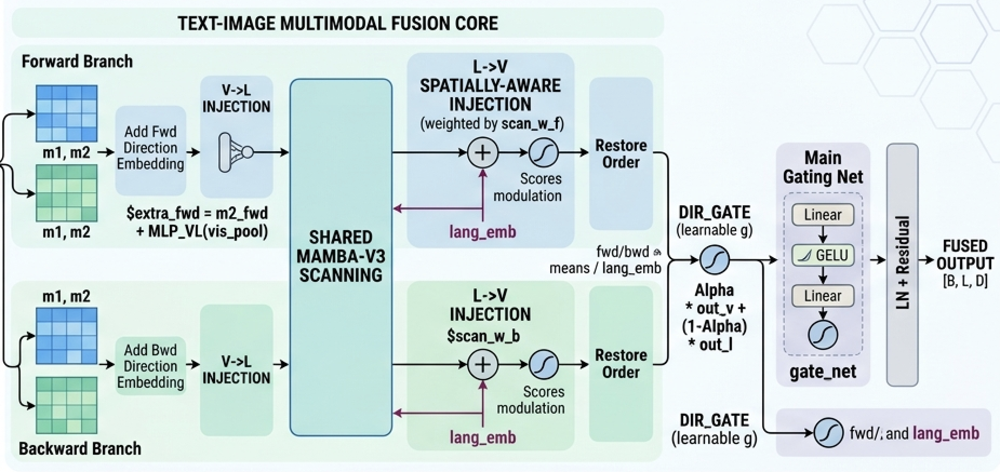
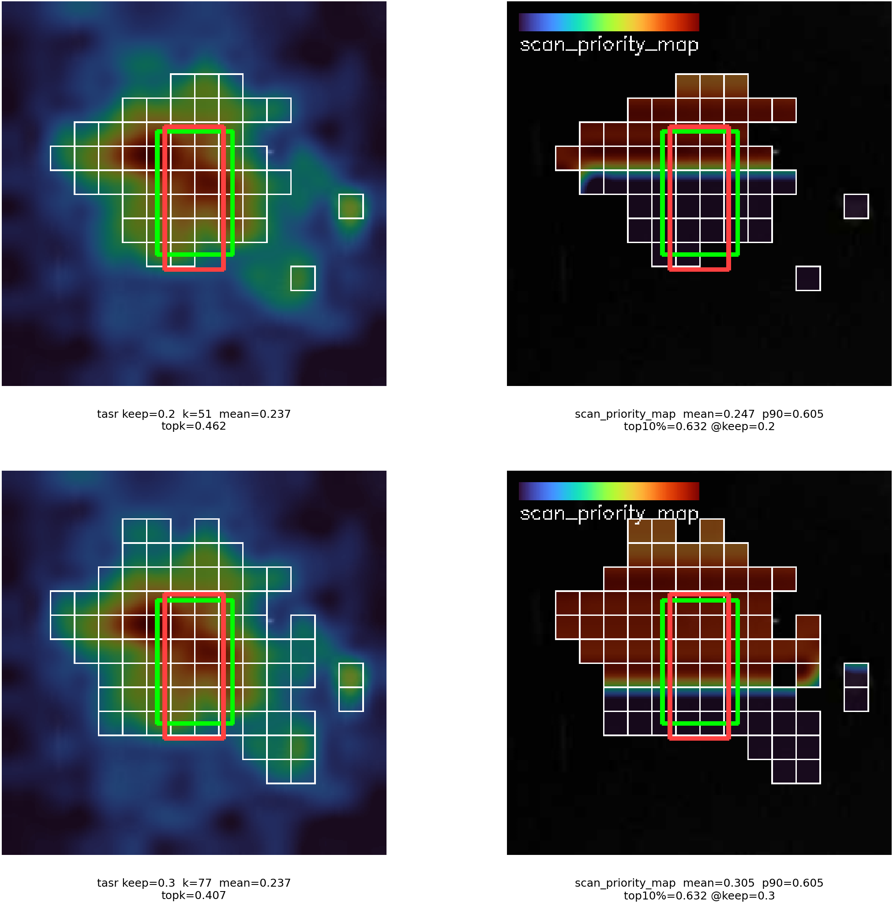
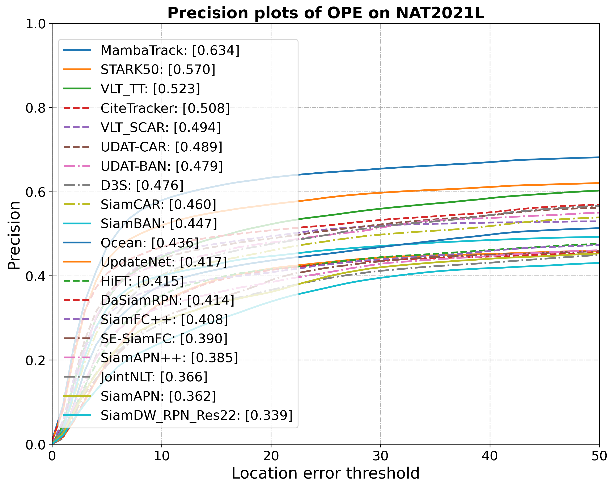
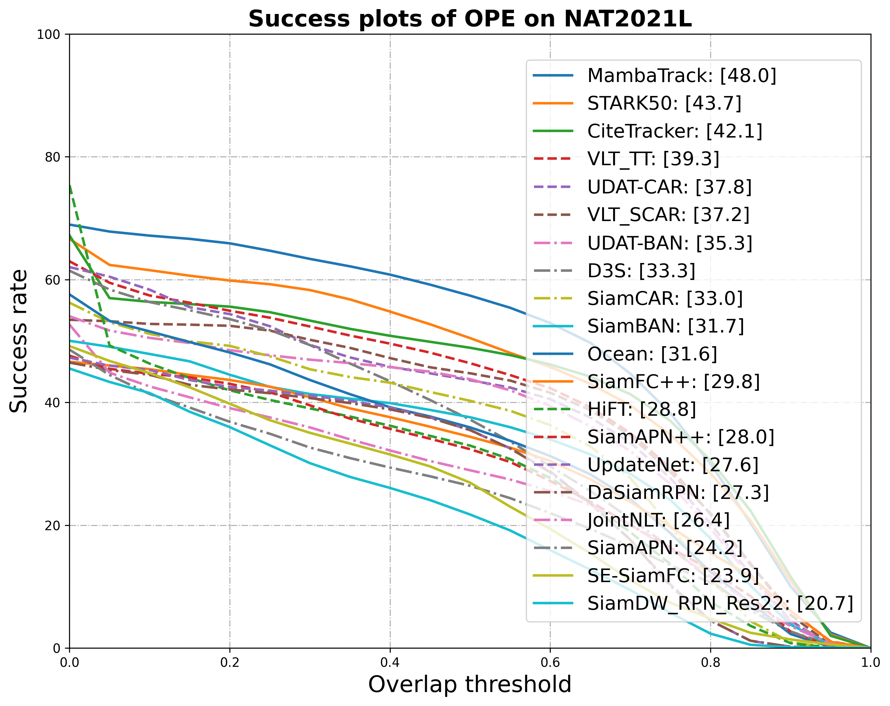
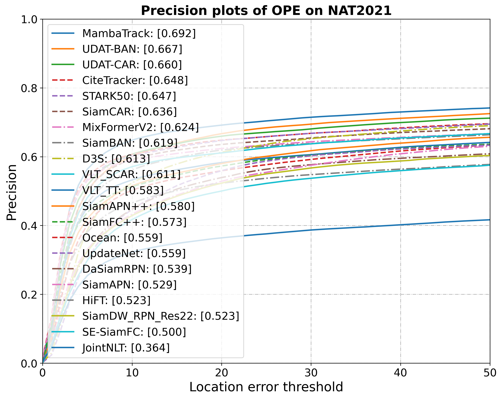
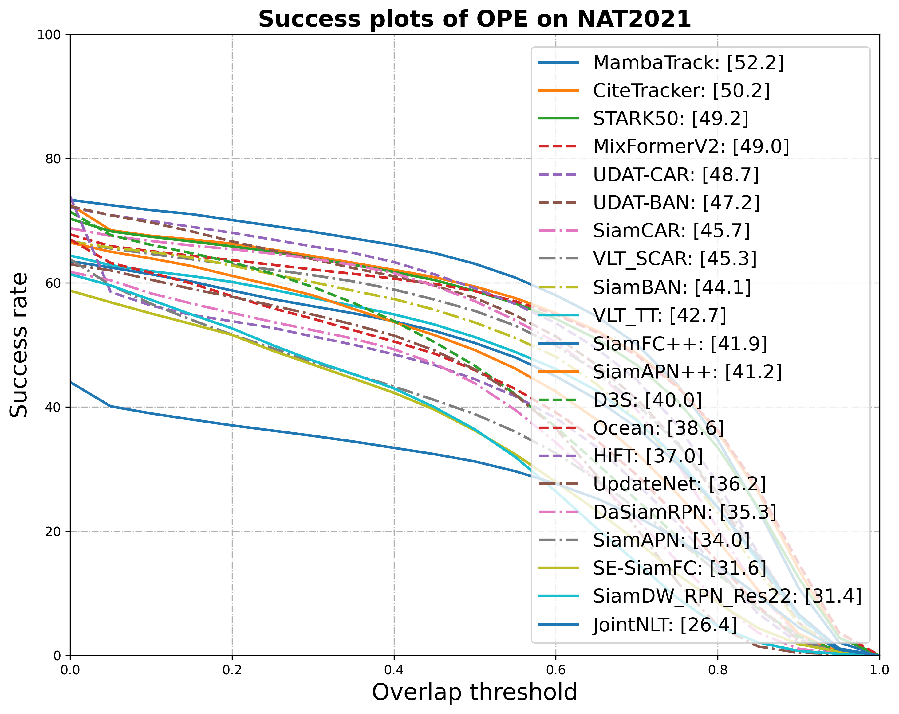

<div class="middle center"> <div style="width: 100%"> # 工作汇报 <hr></hr> [王倓](https://github.com/Mandorian) 2026.03.07 </div> </div> <!--s--> <div class="middle center"> <div style="width: 100%"> # 融合模块 </div> </div> <!--v--> <p></p> + TASR分数直接作为融合排序依据，避免路由模块与融合模块评分标准不一致导致的优化目标漂移 + 构建高分优先序sort_idx与低分优先逆序rev_idx，共享Mamba-v3双分支分别扫描，参数高效且信息互补 + V→L注入将视觉池化特征经MLP映射叠加至语言路，L→V注入以sigmoid分数调制语言特征回传视觉路。 + 方向门融合正向与反向扫描输出，主门控融合视觉路与语言路，层级化设计实现精细化特征融合。 <!--s--> <p></p> <!--v--> <div class="mul-cols"> <div class="col"> <p></p> </div> <div class="col"> <p></p> </div> </div> <div class="mul-cols"> <div class="col"> <p></p> </div> <div class="col"> <p></p> </div> </div>